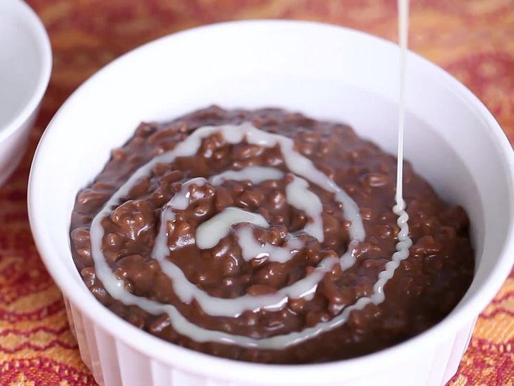

Champorado

Description
Champorado is a beloved Filipino dessert that combines rice and chocolate, resulting in a warm, comforting, and slightly sweet dish
Ingredients
- 1 cup glutinous sweet rice
- 2 cups light coconut milk
- 1/2 cup cocoa powder
- 1 cup white sugar
- 1 teaspoon salt
- 1 cup thick coconut milk
Steps
- Combine rice and light coconut milk in a large pot; bring to a boil for 10 minutes, while stirring occasionally to keep rice from sticking to the bottom of the pot.
- Stir cocoa powder, sugar, and salt into rice; reduce heat to low, cover, and continue cooking, stirring occasionally, until rice is tender, about 10 minutes more.
- Pour thick coconut milk into rice mixture; stir to combine. Serve hot.
Home